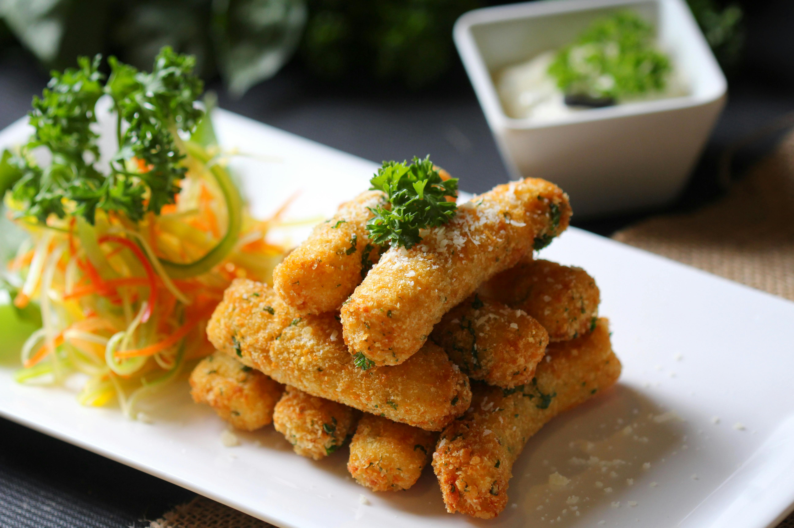

Home
Fish Fingers

Description
Fish fingers (also called fish sticks) are breaded and fried strips of white fish. Usually crunchy, golden, and often served with tartar sauce, ketchup, or mayonnaise.
Ingredients
- White fish fillets (like cod, haddock, or tilapia)
- Salt & Pepper
- Garlic powder or lemon zest (optional for extra flavor)
- Flour
- Breadcrumbs
- Oil
- Eggs
Steps
- Cut the fish fillets to finger size strips
- Pat dry and sprinkle fish strips with salt, pepper or optional spices
- Prepare 3 bowls with flour, beaten whisked eggs, breadcrumbs
- Dip each fish strip into flour then egg then again into breadcrumbs
- Heat oil in a frying pan over medium heat
- Fry fish strips for 2-3 minutes per side until golden brown
- Place on paper towels to drain excess oil
- Serve hot with lemon wedges, tartar sauce, or ketchup